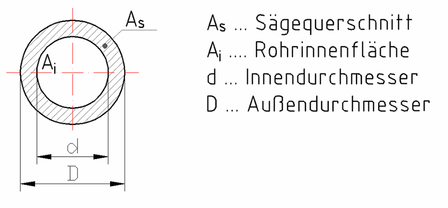
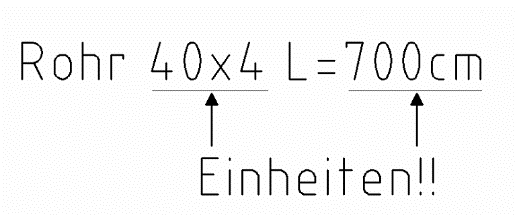

4 Rohrflächen
Zum Zeichnen und Rechnen am Papier. Braucht Internet.
Zuerst die Pflicht-Aufgaben (★★). Die Extra-Aufgaben (★★★) am Ende sind freiwillig.
Tippe in die Kästchen. Dann tippe auf „Prüfen“.
Grün = richtig, Rot = schau noch einmal.

Ai = Rohrinnenfläche (das Loch, da fließt das Wasser)
As = Sägequerschnitt (der Ring, den die Säge durchschneidet)
D = Außendurchmesser, d = Innendurchmesser, s = Wanddicke
Ai = d² · π4
As = D² · π4 − d² · π4
Innendurchmesser: d = D − 2 · s
In anderen Blättern heißt D auch DA (außen), d auch di (innen) und As auch AS. Es ist dasselbe.
As ist die große Kreisfläche minus das Loch.
Aufgabe 1 ★★

Gegeben: Rohr 40 × 4 → D = 40 mm, s = 4 mm
Berechne den Innendurchmesser, die Rohrinnenfläche, die Außenkreisfläche und den Sägequerschnitt.
„40 × 4“ heißt: 40 mm außen, die Wand ist 4 mm dick. Die Länge L im Bild brauchst du hier nicht.
| Innendurchmesser d = | mm |
| Rohrinnenfläche Ai = | mm² |
| Außenkreisfläche = | mm² |
| Sägequerschnitt As = | mm² |
Aufgabe 2 ★★
Rohr mit D = 84 mm und d = 78 mm. Berechne die fehlenden Werte. Achte auf die Einheiten!
Wanddicke aus den Durchmessern: s = (D − d) : 2. Rechne zuerst in mm, dann umrechnen (mm → cm ist : 10, mm² → cm² ist : 100).
| Wanddicke s = | cm |
| Sägequerschnitt As = | cm² |
| Rohrinnenfläche Ai = | cm² |
Extra: Wenn du noch Zeit hast ★★★
Pflicht geschafft! Du darfst hier aufhören.
Diese Aufgaben sind freiwillig. Hier wechseln die Einheiten oft.
Aufgabe 3 ★★★
Berechne die fehlenden Werte. Achte auf die Einheiten!
| D | d | s | As | Ai |
|---|---|---|---|---|
| 72 mm | cm | 3 mm | cm² | cm² |
| 14 mm | cm | 2 mm | mm² | mm² |
Aufgabe 4 ★★★
Jetzt ist die Rohrinnenfläche gegeben. Berechne die fehlenden Werte.
Innendurchmesser aus der Fläche:
d = √(Ai · 4 : π)
Außendurchmesser: D = d + 2 · s
Rechne zuerst in mm: 39,39 cm² = 3939 mm², 1,5 mm bleibt 1,5 mm.
| D | d | s | As | Ai |
|---|---|---|---|---|
| cm | cm | 1,5 mm | mm² | 39,39 cm² |
| dm | dm | 4 mm | cm² | 480,9 cm² |